MeVSono — Notice d’utilisation
Combien de temps dure une oscillation ? Quelles fréquences composent une note ? Les deux onglets permettent de répondre à ces questions sur le même enregistrement.
Vérifier un la à 440 Hz
Commencez en Mode › Simplifié avec le fichier sinus_440_Hz.wav. Enregistrez-le à partir du lien puis ouvrez-le dans MeVSono. Un diapason enregistré au microphone convient aussi pour cette mesure.
- Ouvrez le son. Dans Mesure de la période, zoomez à la molette sur une portion régulière jusqu’à distinguer une dizaine d’oscillations.
- Partez d’un passage par zéro montant. Glissez jusqu’au passage montant situé cinq périodes plus loin. Le panneau doit indiquer environ 11,36 ms pour cet intervalle. Une période vaut alors 11,36 / 5 ≈ 2,27 ms, soit une fréquence de 5 / 0,01136 ≈ 440 Hz.
- Passez à Étude des fréquences. Gardez l’extrait initial du fichier ou, pour un diapason, délimitez environ une demi-seconde de son régulier avec A et B. Cliquez sur le pic principal et comparez sa fréquence à votre calcul.
À consigner dans le compte rendu : le nombre de périodes comptées, la durée totale lue, la fréquence calculée et la fréquence du pic. Un écart proche d’un facteur deux invite à recompter les motifs entre les curseurs.
Ouvrir un son
Cliquez sur Ouvrir un son…, appuyez sur Ctrl + O ou déposez un fichier sur la fenêtre. Ces trois gestes permettent aussi de changer de son en cours de séance.
MeVSono accepte notamment WAV, MP3, OGG, FLAC et M4A. Pour un MP4, MOV ou MKV, il analyse la piste audio par défaut, ou la première piste audio en l’absence d’indication. Il charge au plus les 30 premières minutes. Une lecture partielle est signalée en bas de la fenêtre.

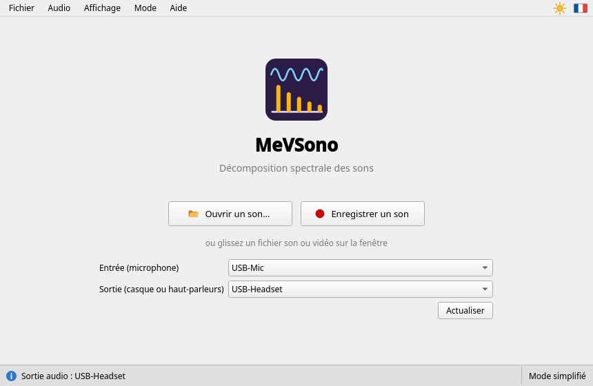
Se repérer dans la fenêtre de mesure
Après l’ouverture, le panneau de gauche indique le nom du son, sa fréquence d’échantillonnage, ses voies et sa durée. Les deux onglets se trouvent sous les menus. Mesure de la période affiche le signal au cours du temps. Étude des fréquences affiche aussi le spectre de l’extrait choisi. La barre d’état indique l’opération en cours ou son résultat, et le mode actif.
Le soleil ou la lune, en haut à droite, change le thème. Le drapeau change la langue de l’interface. F1 ouvre la notice dans cette langue, y compris hors connexion.
Enregistrer et sauvegarder une prise
- Branchez le microphone ou le casque USB. Sur l’accueil, choisissez Entrée (microphone) et Sortie (casque ou haut-parleurs). Si un appareil manque dans la liste, cliquez sur Actualiser. Pendant les mesures, retrouvez ces deux listes dans Audio › Périphériques audio…
- Cliquez sur le rond rouge Enregistrer un son, sur l’accueil ou dans le menu Fichier. La prise commence immédiatement. La fenêtre affiche le microphone, la durée écoulée et la Crête du micro. Le niveau est exprimé en dBFS, par rapport à la pleine échelle numérique. Près de 0 dBFS, la saturation est possible. Faites d’abord une prise courte. Si les crêtes atteignent régulièrement 0 dBFS, diminuez le gain sur le microphone ou dans le système, puis recommencez la prise.
- Cliquez sur Arrêter pour ouvrir la prise dans MeVSono. Annuler abandonne la prise en cours. La durée maximale d’une prise est de 30 minutes.
- Pour conserver la prise, cliquez sur la disquette Enregistrer la prise en WAV…, sous son nom ou dans Fichier. Choisissez le dossier et le nom du fichier. Le WAV (PCM 16 bits) contient toute la prise, même si A et B en délimitent seulement une partie. Si vous fermez la fenêtre ou remplacez une prise encore en mémoire, MeVSono propose de la sauvegarder.

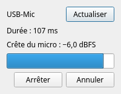

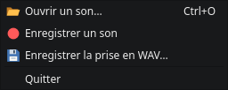
Écouter le son ou l’extrait
Les commandes d’écoute se trouvent sous le nom du son. Lecture ▶ démarre l’écoute. Pause ⏸ conserve la position du trait rouge sur le signal. Arrêt ⏹ ramène la prochaine lecture au début de la portion choisie. Appuyez sur Espace pour écouter à nouveau un passage ou mettre la lecture en pause.
En mode simplifié, l’onglet Mesure de la période joue tout le son. L’onglet Étude des fréquences joue uniquement l’extrait A–B. En mode expert, la liste à gauche de ▶ permet de choisir l’un ou l’autre dans les deux onglets.
Mesurer une période avec t₁ et t₂
- Ouvrez Mesure de la période. Placez la souris sur la portion à examiner et tournez la molette jusqu’à distinguer les motifs du signal.
- Maintenez le bouton gauche et glissez d’un point du motif au point correspondant d’un motif suivant. Les traits turquoise t₁ et t₂ marquent les deux instants. Au relâchement, chaque curseur rejoint un passage par zéro montant s’il en trouve un à proximité.
- Lisez les deux instants et Δt = t₂ − t₁ dans le panneau de gauche. Pour affiner une borne, attrapez son trait ou utilisez les touches de déplacement.

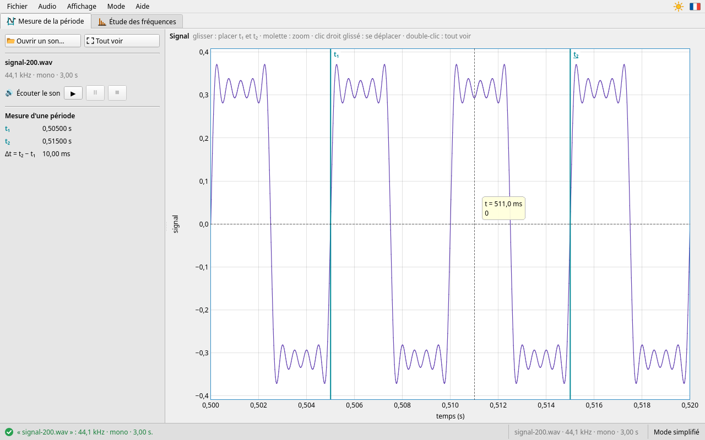
Pour n périodes complètes, T = Δt / n. Dans la capture, une période dure 5,00 ms, soit une fréquence de 200 Hz. La fréquence en hertz est f = 1 / T avec T en secondes. Sur un son complexe, plusieurs passages montants peuvent appartenir à un seul motif. Repérez la forme entière qui revient. Les curseurs t₁ et t₂ mesurent sa durée. Les bornes A et B choisissent le son dont on calcule le spectre. Chaque onglet garde son propre zoom du signal.
En mode expert, décochez Aimanter t₁ et t₂ aux passages par zéro pour placer les curseurs librement à la souris. Une fois l’intervalle défini, Analyser cet intervalle reporte t₁ et t₂ sur A et B et ouvre l’onglet des fréquences.
Choisir l’extrait A–B
Dans Étude des fréquences, le signal du haut sert à délimiter l’extrait. Glissez dessus avec le bouton gauche pour placer A au début (orange) et B à la fin (vert). La zone entre les traits est ombrée. Pour déplacer une seule borne, attrapez son trait ou cliquez à l’instant voulu pour y amener la borne la plus proche.
Pour une note tenue, écartez A et B sur la partie régulière. Pour étudier une attaque, resserrez-les autour du début de la note. Le panneau indique les deux instants, la durée effectivement analysée et le nombre d’échantillons. À 48 000 échantillons par seconde, un extrait de 0,100 s contient 4 800 valeurs par voie. Le spectre du bas est recalculé après chaque modification. Zoom sur l’extrait agrandit l’intervalle sur le signal. Tout voir rétablit les vues d’ensemble du signal et du spectre.
Lire la fréquence et l’amplitude d’un pic
Sur le signal, une abscisse désigne un instant. Sur le spectre, elle désigne la fréquence d’une composante en hertz. L’axe vertical donne l’amplitude numérique, ou le niveau en dBFS si cette option est activée en mode expert. Un spectre décrit l’extrait A–B de la voie étudiée.
Pour un son périodique, la fréquence fondamentale vaut 1 / T. Les harmoniques sont ses multiples entiers. Le pic le plus haut peut correspondre à un harmonique de rang supérieur à 1. Des pics à 400, 600 et 800 Hz, par exemple, sont compatibles avec une fondamentale à 200 Hz même si aucun pic n’y est visible.
- Survolez un pic. Les premières valeurs de la bulle sont les coordonnées du pointeur. Sous Pic le plus proche, les valeurs correspondent au pic détecté le plus proche en fréquence, marqué par un point plein.
- Cliquez pour fixer la lecture. Le panneau conserve la fréquence et l’amplitude sous Pic sélectionné quand la souris quitte le graphique.
- Quand le spectre a le focus, ← et → parcourent ses pics visibles. Échap efface la sélection.

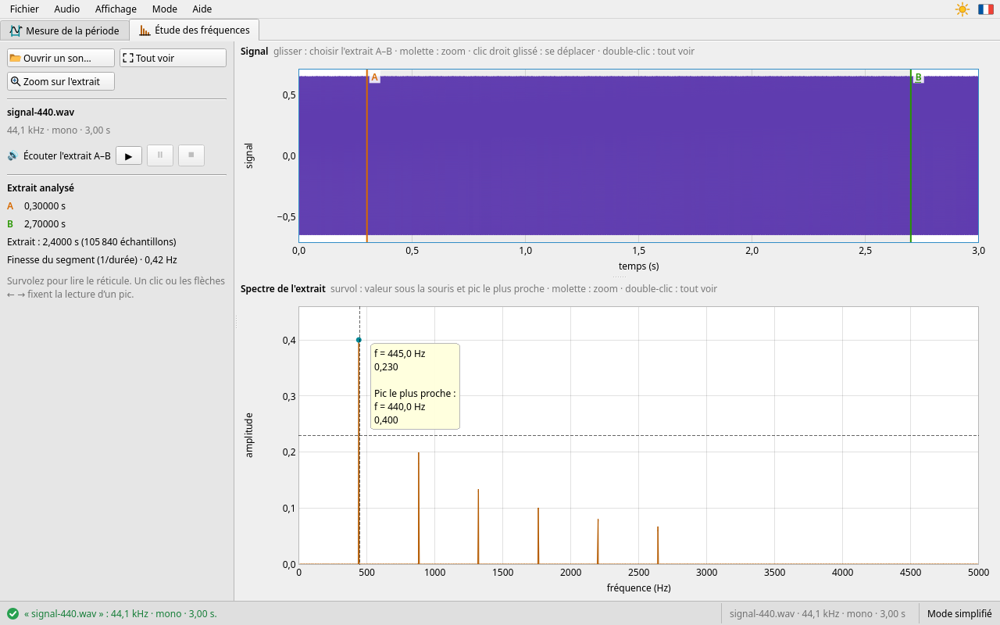
La finesse du segment indiquée en hertz vaut l’inverse de sa durée. Un segment de 0,1 s donne ainsi 10 Hz, et un segment de 1 s donne 1 Hz. Le zoom agrandit la courbe existante. Pour modifier la séparation de deux pics proches, agissez sur la durée du segment et sur la fenêtre de pondération.
Ajuster l’axe vertical
En mode simplifié, l’axe des ordonnées s’ajuste automatiquement aux valeurs visibles du signal et du spectre. Zoomez horizontalement sur un passage faible pour détailler ses variations. Les graduations indiquent la nouvelle échelle. Comparez les nombres inscrits sur l’axe avant de conclure qu’un son a une amplitude plus grande qu’un autre. Le CSV conserve les amplitudes numériques du son.
Pour garder la même échelle pendant un zoom ou un déplacement, choisissez Mode › Expert, puis Affichage › Réglages… Dans la rubrique Affichage, décochez Ajuster l’axe vertical à la partie visible. Recochez la case pour réactiver l’ajustement.

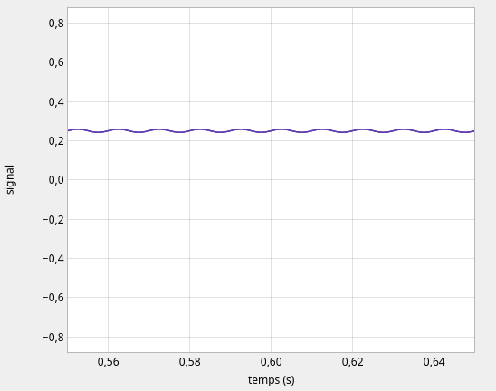

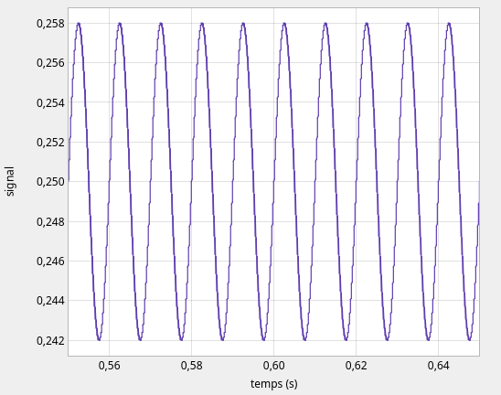
Choisir un son pour le TP
Cliquez sur un nom de fichier pour enregistrer le WAV sur le poste, puis ouvrez-le dans MeVSono. Ces sept sons sont fournis avec la notice et utilisables hors connexion.
| Fichiers | Manipulation et observation attendue |
|---|---|
sinus_440_Hz.wavdiapason_440_Hz.wav | Mesurez le la sur le sinus, puis sur la partie tenue du diapason. Retrouvez le pic proche de 440 Hz et suivez la diminution d’amplitude du diapason dans le temps. |
harmoniques_de_220_Hz.wav | Prévoyez les fréquences des rangs 2 et 3 à partir de 220 Hz. Relevez les pics vers 440 et 660 Hz, puis vérifiez leurs rangs dans le tableau expert. |
clarinette_la.wavpiano_la.wav | Choisissez une portion tenue de même durée dans chaque son. Mémorisez le premier spectre, puis ouvrez le second. Repérez les pics de fréquences voisines et comparez leurs hauteurs relatives. |
battements_440_et_444_Hz.wav | Comptez les maxima d’amplitude sur une seconde. Élargissez ensuite A–B à deux secondes et recherchez les deux pics qui expliquent les quatre battements par seconde. |
balayage_200_a_2000_Hz.wav | Comparez deux extraits courts de même durée, l’un près du début et l’autre près de la fin. Le pic se déplace vers les hautes fréquences. Un long extrait réunit les fréquences traversées. |
Comparer deux spectres
- Dans Étude des fréquences, choisissez le premier extrait. Une fois le spectre affiché, cliquez sur Affichage › Mémoriser ce spectre.
- Déplacez A et B, ou ouvrez un second son. Le spectre actuel est en trait plein et la référence en tirets. La légende à gauche identifie les deux sons et l’intervalle mémorisé.
- Pour comparer les amplitudes relatives, cochez Ramener les deux pics maximaux à la même hauteur dans Affichage. Seul le tracé de la référence est multiplié par un facteur commun. Décochez la commande pour retrouver les niveaux d’origine.

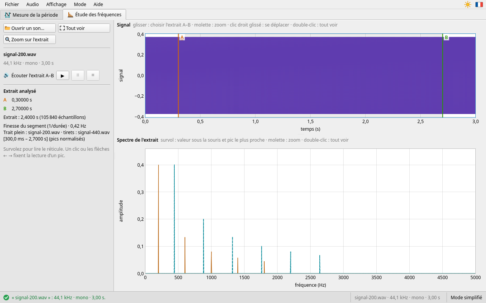
Une nouvelle mémorisation remplace la référence. Retirer le spectre de référence la supprime. Si un changement des réglages d’analyse la masque, rétablissez la fenêtre de pondération et le réglage de taille de FFT utilisés lors de sa mémorisation.
Comparer des passages ou des sons
Pour comparer le timbre de deux notes de même hauteur, gardez la même pondération et une même durée de segment. Mémorisez une portion tenue de la première note, puis choisissez une portion tenue de la seconde. Pour suivre l’évolution d’une seule note, mémorisez son attaque puis déplacez A–B sur sa tenue. Les positions des pics se lisent en hertz et leurs hauteurs dépendent aussi du gain d’enregistrement.
Avec deux sons purs de même amplitude à 440 et 444 Hz, le signal présente des battements à 4 Hz. Gardez le spectre d’un extrait court, puis écartez A et B d’au moins deux secondes avec la FFT en taille automatique. Les deux pics apparaissent séparément. Leur motif commun dure 250 ms. Sa fréquence de 4 Hz est sous la limite de recherche de 20 Hz, d’où le message Aucune fondamentale stable détectée. en mode expert.
Choisir le mode
Utilisez Mode › Simplifié pour faire mesurer la période et lire les pics par les élèves. Passez à Expert pour confronter leur résultat à la détection automatique ou exploiter les valeurs dans un tableur. La coche et le texte en bas à droite indiquent le choix actif. Les deux modes permettent d’enregistrer, d’écouter, de sauvegarder la prise en WAV et de comparer des spectres.

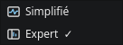
| À l’ouverture d’un son | Simplifié (par défaut) | Expert |
|---|---|---|
| Extrait initial | Les 80 % centraux du son. | La portion de 0,5 s la plus forte sur la voie choisie, ou tout le son s’il est plus court. |
| Analyse | Fenêtre de Hann, taille de FFT automatique, amplitudes et fréquences linéaires. La vue initiale va jusqu’à 5 kHz dans la limite de la moitié de la fréquence d’échantillonnage. | Réglages modifiables, choix de voie, estimations de période et de fondamentale, tableau des harmoniques et exports CSV. |
Changer de mode conserve le son et les bornes A–B déjà placées. Les réglages experts sont retrouvés au retour dans ce mode.
Fondamentale et harmoniques
L’autocorrélation compare l’extrait A–B à une copie décalée dans le temps. Si la forme se superpose à nouveau pour un même retard sur plusieurs motifs, ce retard renseigne sur la période. Comparez-le à la mesure manuelle Δt / n. Sur un extrait long, MeVSono cherche ce retard sur un bloc actif de 65 536 échantillons, puis vérifie la répétition sur plusieurs portions de A–B. Les deux onglets indiquent la période du même extrait. Les 5 kHz de la vue initiale limitent uniquement la portion de spectre visible. Si l’extrait ne présente pas de période suffisamment nette, les curseurs restent disponibles pour mesurer une durée.
Dans Étude des fréquences, les petits cercles marquent les pics détectés. MeVSono cherche une fondamentale f₁ compatible avec les fréquences des pics et la répétition du signal. Chaque pic est affecté à un seul rang. Avec deux pics à 200 et 500 Hz, le motif peut se répéter toutes les 10 ms. La fondamentale est alors de 100 Hz et les rangs 2 et 5 sont mesurés. Le rang 1 affiche un tiret. Une détection insuffisante donne le message Aucune fondamentale stable détectée.

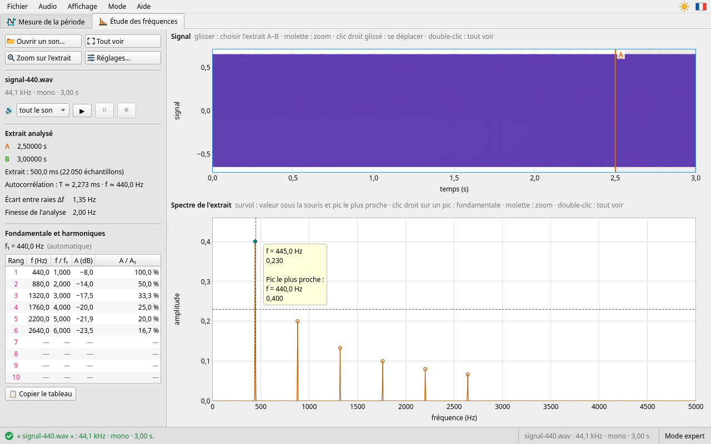
- Pour fixer manuellement f₁, faites un clic droit près du pic, puis choisissez Prendre le pic de … comme fondamentale. Détection automatique rend la main à l’estimation automatique.
- Le tableau donne le rang, la fréquence mesurée, le rapport f / f₁, le niveau d’amplitude et le pourcentage de l’amplitude du rang 1. Un tiret indique une valeur indisponible. En particulier, l’amplitude relative demande un pic au rang 1.
- Afficher les repères n × f₁ place des lignes pointillées aux fréquences théoriques des harmoniques. Copier le tableau copie les lignes et les colonnes pour les coller dans un tableur ou un document.
Régler l’analyse et l’affichage
En mode expert, ouvrez Affichage › Réglages… ou le bouton Réglages… du panneau de gauche. Les changements s’appliquent immédiatement. Valeurs par défaut rétablit les paramètres d’analyse et d’affichage. Fermer revient à la mesure.

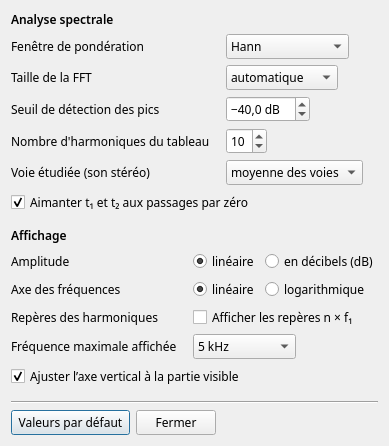

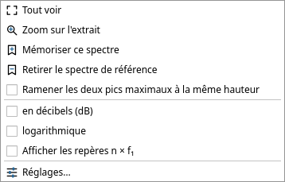
Fenêtre de pondération
Lorsque les extrémités d’un segment ne se raccordent pas, une partie de l’énergie d’une sinusoïde se répartit sur les raies voisines. Une fenêtre de pondération multiplie les échantillons par des coefficients connus avant le calcul. Elle influe sur la largeur des pics et sur les lobes secondaires, qui peuvent masquer une composante faible près d’une composante forte.
| Fenêtre | Effet sur le spectre |
|---|---|
| Hann | Réglage initial. Compromis entre largeur des pics et atténuation des lobes secondaires. |
| Rectangulaire | Pondération uniforme. Lobe principal étroit et lobes secondaires plus élevés. |
| Hamming | Lobes secondaires proches du pic atténués, à décroissance plus lente loin du pic. |
| Blackman, Blackman-Harris | Lobes secondaires davantage atténués, au prix d’un lobe principal plus large. |
| À sommet plat | Pic plus large. Sa hauteur varie peu avec la position de la fréquence entre deux raies. |
Taille de la FFT et finesse du segment
En automatique, la transformée de Fourier rapide (FFT) traite l’extrait en un segment jusqu’à 262 144 échantillons et le complète par des zéros jusqu’à une puissance de deux. Au-delà, ou avec une taille imposée plus courte que l’extrait, les segments se recouvrent d’au moins la moitié et leurs puissances sont moyennées. Les tailles proposées vont de 1 024 à 262 144 points.
Écart entre raies Δf vaut fe / N, où fe est la fréquence d’échantillonnage et N la taille de la FFT. Finesse de l’analyse vaut l’inverse de la durée d’un segment. Ajouter des zéros resserre les raies calculées. La séparation physique de deux composantes dépend de la durée des données, de la pondération et de leurs amplitudes. La bulle de Δf précise la taille de la FFT et, en cas de moyennage, le nombre de segments.
Exemple à 48 kHz. Avec 4 800 échantillons de son et une FFT fixée à 8 192 points, le segment dure 0,100 s. La finesse indiquée vaut 10 Hz, tandis que l’écart entre raies vaut 48 000 / 8 192 ≈ 5,86 Hz. Passer à 16 384 points sur le même extrait donne une raie tous les 2,93 Hz. Pour observer davantage de périodes du son, il faut écarter A et B.
Détection, voie et axes
- Seuil de détection des pics agit sur le repérage des pics. À −40 dB, le seuil vaut 1 % de l’amplitude du pic maximal. Nombre d’harmoniques du tableau fixe le nombre de rangs affichés, de 1 à 40 (10 par défaut).
- Voie étudiée choisit, pour un son stéréo, la moyenne des voies, la gauche ou la droite. Le signal, le spectre et l’extrait CSV suivent ce choix.
- Amplitude permet une lecture linéaire ou en dBFS. Une amplitude numérique de 1 vaut 0 dBFS, une amplitude de 0,5 vaut environ −6 dBFS. Une mesure de pression acoustique en pascals demanderait en plus un microphone et une chaîne étalonnés.
- L’axe des fréquences peut être linéaire ou logarithmique. Fréquence maximale affichée fixe la limite de la vue d’ensemble, jusqu’à fe / 2. L’ajustement vertical agit sur les graduations du signal et du spectre.
Exporter les mesures en CSV
En mode expert, le menu Fichier propose deux exports. Attendez la fin du calcul pour exporter le spectre de l’extrait courant.
| Commande | Données du fichier |
|---|---|
| Exporter le spectre (CSV)… | spectre.csv contient une ligne par raie, de 0 à fe / 2, même si la vue est zoomée. Colonnes f (Hz), A et A (dB). Le fichier contient les raies de la FFT du son courant. Le sommet interpolé indiqué sous « Pic sélectionné » peut se trouver entre deux lignes du CSV. |
| Exporter l’extrait du signal (CSV)… | extrait.csv contient les échantillons de la voie étudiée entre A et B. Colonnes t (s), mesuré depuis le début du son, et signal. |
Choisissez le dossier et le nom du fichier. MeVSono ajoute l’extension .csv si elle manque et demande confirmation avant un remplacement. L’écriture peut être annulée dans la fenêtre de progression.
La langue de MeVSono détermine le format. En français, les colonnes sont séparées par un point-virgule et les décimales par une virgule. En anglais, le séparateur de colonnes est la virgule et le séparateur décimal est le point. Si le tableur place toute la ligne dans une seule cellule, choisissez ce séparateur à l’importation. Pour obtenir un fichier audio à réécouter, utilisez Enregistrer la prise en WAV…
Souris et clavier
Donnez le focus au signal pour déplacer une borne de temps, ou au spectre pour parcourir les pics. Le même raccourci de zoom agit sur le graphique actif.
| Action | Geste ou raccourci |
|---|---|
| Ouvrir un fichier | Ctrl + O ou glisser le fichier sur la fenêtre. |
| Changer d’onglet | Ctrl + Tab, ou Ctrl + Page suiv. / Page préc. |
| Activer un graphique au clavier | Tab jusqu’au cadre en surbrillance. |
| Placer ou déplacer deux bornes | Glisser sur le signal pour former la paire. Attraper un trait ou cliquer près de sa nouvelle position pour déplacer une seule borne. |
| Déplacer précisément un curseur | Sur le signal, 1 ou 2 choisit le curseur, puis ← ou → le déplace d’un échantillon. Avec Maj, le pas est de 1 % de la largeur visible, au minimum un échantillon. |
| Zoomer sur un graphique | Molette autour du pointeur. Au clavier, + ou − autour du curseur actif ou du pic sélectionné. |
| Déplacer ou rétablir la vue | Clic droit glissé ou Maj + molette pour déplacer. Double-clic ou Début pour rétablir le graphique actif. Tout voir rétablit les deux graphiques. |
| Fixer une lecture de pic | Clic sur le spectre ou ← / →. Échap efface la sélection. |
| Écouter ou mettre en pause | Espace. |
| Changer la taille de l’interface | Ctrl + + ou Ctrl + −. Ctrl + 0 rétablit la taille normale, notamment après une projection. |
| Ouvrir la notice | F1 ou Aide › Notice d’utilisation… |
Dépannage
- La période automatique et ma mesure diffèrent.
- Encadrez environ cinq motifs entiers entre t₁ et t₂ et divisez Δt par leur nombre. En mode expert, utilisez Analyser cet intervalle pour comparer les deux méthodes sur la même portion régulière du son.
- Le son stéréo paraît presque silencieux sur la voie moyenne.
- En mode expert, affichez successivement la gauche et la droite. Lorsque leurs oscillations sont en opposition de phase, leur moyenne peut être très faible alors que chaque voie porte bien un signal.
- Le casque USB vient d’être branché et n’apparaît pas.
- Sur l’accueil ou dans Audio › Périphériques audio…, cliquez sur Actualiser. Choisissez à la fois le micro en entrée et le casque en sortie. Si la liste reste vide, vérifiez que le système voit l’appareil et autorise l’accès au micro.
- « Enregistrer un son » est grisé, ou la prise s’est interrompue.
- La commande demande une entrée disponible. Si le micro a été retiré pendant la prise, le logiciel ouvre la partie reçue lorsqu’elle contient des échantillons. Vous pouvez la sauvegarder en WAV avant de reconnecter le micro.
- La barre du micro reste basse, ou indique « Pleine échelle ».
- Vérifiez l’entrée choisie et le gain du microphone. En cas de pleine échelle répétée, réduisez le gain ou éloignez le micro. Pendant l’analyse, « Sommets à pleine échelle » signale des plateaux compatibles avec un écrêtage dans l’extrait.
- La lecture est silencieuse ou s’arrête au retrait du casque.
- Choisissez une sortie disponible, vérifiez son volume et relancez la lecture. En étude des fréquences, vérifiez aussi la position de l’extrait A–B que vous écoutez.
- Le fichier est refusé ou n’est lu qu’en partie.
- Vérifiez qu’il contient une piste audio. Un fichier de format inconnu peut être converti en WAV. À l’ouverture, la barre d’état signale une fin illisible, des valeurs remplacées par zéro ou une durée limitée à 30 minutes.
- Le signal forme une bande pleine, ou le spectre indique « Extrait trop court ».
- Zoomez sur le signal avec la molette pour en voir les oscillations. Pour obtenir un spectre, écartez A et B sur le signal. Un calcul demande au moins huit échantillons.
- Deux pics se confondent, ou la référence disparaît.
- Pour des pics proches, allongez le segment analysé. Si la taille de FFT est fixée et limite le segment, augmentez-la aussi. Pour une référence masquée, rétablissez les réglages de FFT et de pondération de la comparaison.
Installer et configurer un poste
Les distributions de MeVSono sont publiées sur la page des versions de MeVSuite. Une fois installé, le programme ouvre les fichiers, effectue les mesures et affiche cette notice hors connexion.
- Windows portable. Décompressez l’archive
MeVSono-version-windows-x64.zipet conservez son dossier complet. Lancezmevsono.exe. Pour démarrer avec un fichier audio, utilisez « Ouvrir avec… » dans l’Explorateur. - Windows avec installateur.
MeVSono-version-windows-x64-setup.exeinstalle le logiciel dansProgram Files\MeVSuite\MeVSonoet ajoute un raccourci au menu Démarrer. La désinstallation se fait dans les paramètres de Windows. Pour un déploiement silencieux, l’installateur et le désinstallateur acceptent les options ci-dessous. - Linux. Installez le paquet
.debou.rpmcorrespondant au système, ou rendez le fichier.AppImageexécutable et lancez-le. FFmpeg sert au décodage de formats audio et vidéo supplémentaires.
MeVSono-version-windows-x64-setup.exe /VERYSILENT /SUPPRESSMSGBOXES /NORESTART
"C:\Program Files\MeVSuite\MeVSono\unins000.exe" /VERYSILENT /SUPPRESSMSGBOXES /NORESTARTRéglages personnels et réglages de salle
Au premier lancement, MeVSono utilise le thème du système et le français ou l’anglais selon la langue du poste (anglais par défaut pour les autres langues). Le fichier personnel mevsono.ini conserve le mode, la langue, le thème, les réglages experts, l’agrandissement, le dernier dossier et la géométrie de la fenêtre. Le choix des périphériques audio vaut pour la séance.
| Système | Fichier personnel | Réglages de salle |
|---|---|---|
| Windows | %APPDATA%\MeVSuite\mevsono.ini | mevsono.ini à côté de mevsono.exe. |
| Linux | ~/.config/MeVSuite/mevsono.ini, ou le dossier indiqué par XDG_CONFIG_HOME suivi de /MeVSuite/mevsono.ini. | /etc/MeVSuite/mevsono.ini en priorité, sinon à côté de l’exécutable. |
Au démarrage, une valeur valide du fichier de salle a priorité sur le choix personnel correspondant. Vous pouvez ainsi imposer le mode tout en laissant chacun choisir sa langue. Les modifications faites pendant la séance sont enregistrées dans le fichier personnel. Pour démarrer en mode simplifié, en français et en thème clair, utilisez ces lignes dans le fichier de salle.
mode = simple
language = fr
theme = lightlanguage = auto et theme = auto suivent le système. Aide › À propos de MeVSono… indique le chemin des fichiers de réglages. La notice, ses captures et les sept sons de TP sont disponibles dans le dossier notice du cache personnel de MeVSono. Le navigateur permet d’imprimer la page.
Assistance, version et licence
En cas de fermeture imprévue, le message indique où a été écrit mevsono.log. Le journal, à côté de mevsono.ini, conserve la dernière erreur. Pour signaler un problème de mesure, précisez le fichier ou la prise, l’intervalle A–B, la voie, le mode et ce qui apparaît à l’écran. Indiquez aussi le système et la version donnée dans Aide › À propos de MeVSono… Joignez le journal s’il est disponible.
MeVSono est un logiciel libre de Rémi MEVAERE, distribué sous licence MIT. La fenêtre À propos de MeVSono… présente les composants, dont Qt, Qt Multimedia et FFmpeg. À propos de Qt… donne les conditions de licence de Qt. Sous Windows, les licences des bibliothèques livrées se trouvent dans licences, à côté du programme.
Pour contacter l’auteur, écrivez à suite@sciences-physiques.net.